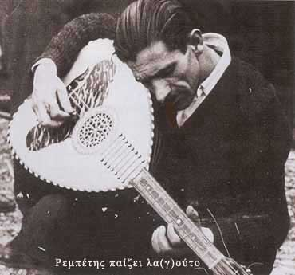

Οι πρόσφυγες ήταν άνθρωποι της δουλειάς αλλά και της διασκέδασης.
Τα τσιφτετέλια, οι καρσιλαμάδες, τα αϊβαλιώτικα και τα ζεϊμπέκικα της αλησμόνητης πατρίδας μεταφέρθηκαν
στους νέους τόπους , επηρέασαν τη μουσική των ντόπιων και συνετέλεσαν στην ανανέωση της
ελληνικής μουσικής. Σημαντική θεωρείται επίσης η επίδραση που άσκησε η μουσική της Μ. Ασίας στη
διαμόρφωση του ρεμπέτικου τραγουδιού. "Αυτοί οι άνθρωποι ήτανε
μαθημένοι να δουλεύουνε και να γλεντάνε. Όλοι οι πρόσφυγες μηδενός εξαιρουμένου. Και κοντά
στους πρόσφυγες μάθαν και οι δικοί μας τώρα", έλεγε ο
Μάρκος Βαμβακάρης
Το γραμμόφωνο με το χωνί του κυρ Σωτήρη και οι αυτοσχέδιες κομπανίες οργανοπαιχτών πλημμύριζαν
με μουσική τα φτωχόσπιτα της Καισαριανής και μετέφεραν ένα αίσθημα αισιοδοξίας στους
ταλαιπωρημένους ανθρώπους.
|
|
 |